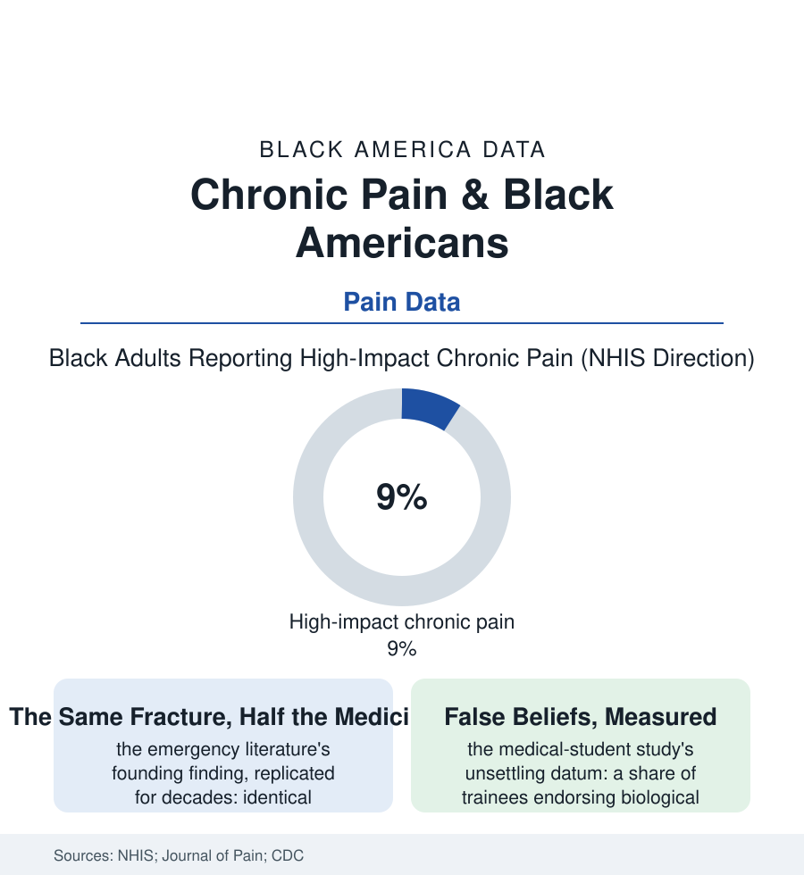

Black Public Health
The Untreated Ache: Chronic Pain in the Data
Black Americans report more severe pain, receive less treatment for it, and were prescribed the fewest opioids in the epidemic's first wave — a file with two disasters inside one diagnosis. The pain file.

Pain is the most common reason Americans seek care and the least objectively measurable thing in medicine — a complaint the system must take on faith. The data of the last forty years describe, with unusual consistency, whose faith gets credited: Black patients report more pain, more severe pain, and receive less treatment for the same documented conditions than any other group in the system. This article reads the pain file.
The Measurement and the Disbelief
The prevalence rows are unambiguous in the federal surveys: chronic pain's rates run comparable across groups, but its severity and impact — the high-impact category of the NHIS, pain that limits life or work on most days — run higher in the Black rows, riding on the occupational file's physical toll (the backs of the warehouse and the ward, the knees of the floor trades, the cumulative musculoskeletal ledger of the laboring workforce), the arthritis file's burden, and the injury data. The treatment rows then run the other way, in the literature's most replicated disparity: the emergency studies beginning in the 1990s — the long-bone fracture papers whose charts showed identical injuries and divergent analgesia — through the decades of confirmations across settings (the post-surgical wards, the cancer suites of the oncology file, the hospice file's end-of-life dosing), the meta-analyses computing the undertreatment's consistency at a scale that rules out the individual bad actor as the whole explanation. The mechanisms the research names are layered: the assessment itself (pain's subjectivity inviting the evaluator's priors into the chart), the false-belief studies — the medical trainees endorsing, at measurable rates, biological fictions about Black bodies' skin and nerves, the endorsement predicting the treatment withheld in the same study's vignettes — and the system's structural rows (the pharmacy file's stocking deserts, the pain clinic's geography, the insurance formulary's gauntlet run most slowly by the patient with the least slack). The file's bleakest elegance is its interaction with the addiction era: the opioid epidemic's first, prescription wave fell lightest on this population precisely because of the undertreatment — the prescribing data showing Black patients' lower rates as the era's grim protective factor — before the illicit market's second wave erased the protection entirely, a sequence the mortality data record without sentimentality: spared by the bias, then reached by the fentanyl.
The Alternatives and the Reckoning
The non-drug armamentarium has its own access file: physical therapy's referral and completion data (the rehab file's rows — the copays per visit multiplied by the protocol's twelve sessions, the clinic's hours against the shift file's), the interdisciplinary pain programs concentrated in the academic centers, the acupuncture and chiropractic coverage patchwork, the cognitive-behavioral pain therapies whose evidence rivals the pharmacology and whose workforce barely exists in the neighborhoods of this file — the treatment menu effectively sorted, in the claims data, by the same geography as everything else in the section. The reckoning's machinery is the era's standard set, sharpened by the file's peculiar evidentiary strength: the standardized order sets and the audit-feedback of the emergency departments that have published their gap's closure under protocol — the finding, repeated across the quality literature, that the disparity shrinks when the discretion does, the protocol standing to the pain file as the algorithm stood to the kidney file: an equity instrument disguised as a workflow — the bias training's weaker evidence beside it, the measurement itself (the pain score's documentation by race in the quality dashboards) doing the slow work. The patient's own strategies fill the file's last column in the qualitative record: the stoicism the community's ethic prizes and the clinicians misread as low pain, the faith file's prayer as analgesia practiced and partly effective in the coping studies, the elder's liniment shelf of the folk pharmacopoeia — a self-treatment economy that is, in the data's cold reading, the rational response of a population whose reports the system has discounted within living memory, teaching itself not to ask.
Reading the Pain Data
The pain file is the health section's confession booth: the place where the system's trust in its patients is measured, in milligrams, and found rationed by race. The NHIS publishes the prevalence; the charts publish the treatment. Between the two numbers lies the distance between hurting and being believed — the file's whole subject, and the section's.
More in Black Public Health
Hypertension Among Black Adults: Prevalence, Control, and Consequences
About 55 percent of Black adults have hypertension — the highest rate of any U.S. group. Prevalence, onset, control, and the stroke, heart, and kidney consequences in the data.
Diabetes Among Black Adults: Prevalence and Complications
Nearly one in five Black adults has diabetes, diagnosed or undiagnosed — and its complications fall with particular weight. The CDC data on prevalence, control, and outcomes.
Black Life Expectancy: The Gap at Birth and Its Causes
Black life expectancy at birth is about 73 years, roughly five years below the national figure — the summary measure of every health gap in this section. The CDC data.
Source: National Health Interview Survey chronic pain data; Journal of Pain and pain-medicine literature; CDC prescribing data; National Academies pain research.